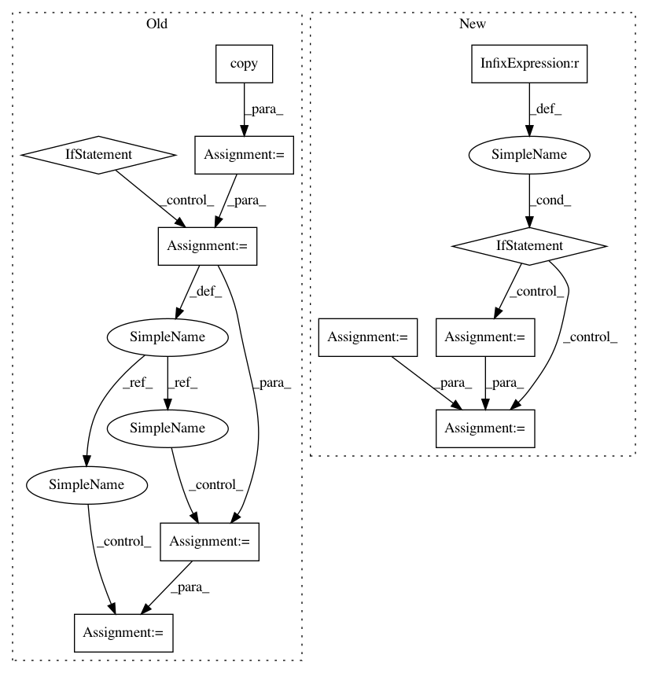

da3630c4eccc04079e465256786f65d6d87e7b1f,pdpipe/sklearn_stages.py,Scale,_transform,#Scale#Any#Any#,253
Before Change
return res
def _transform(self, df, verbose):
cols_to_exclude = self._exclude_columns.copy()
if self._exclude_obj_cols:
obj_cols = list((df.dtypes[df.dtypes == object]).index)
obj_cols = [x for x in obj_cols if x not in cols_to_exclude]
cols_to_exclude += obj_cols
self._col_order = list(df.columns)
if cols_to_exclude:
excluded = df[cols_to_exclude]
apply_to = df[
[col for col in df.columns if col not in cols_to_exclude]
]
else:
apply_to = df
try:
res = pd.DataFrame(
data=self._scaler.transform(apply_to),
index=apply_to.index,
columns=apply_to.columns,
)
except Exception:
raise PipelineApplicationError(
"Exception raised when Scale applied to columns {}".format(
apply_to.columns
)
)
if cols_to_exclude:
res = pd.concat([res, excluded], axis=1)
res = res[self._col_order]
return res
class TfidfVectorizeTokenLists(PdPipelineStage):
After Change
if x not in self._columns_to_scale
]
col_order = list(df.columns)
inter_df = df[self._columns_to_scale]
try:
inter_df = pd.DataFrame(
data=self._scaler.transform(inter_df.values),
index=inter_df.index,
columns=inter_df.columns,
)
except Exception:
raise PipelineApplicationError(
"Exception raised when Scale applied to columns {}".format(
self._columns_to_scale
)
)
if len(unscaled_cols) > 0:
unscaled = df[unscaled_cols]
inter_df = pd.concat([inter_df, unscaled], axis=1)
inter_df = inter_df[col_order]
return inter_df
class TfidfVectorizeTokenLists(PdPipelineStage):
In pattern: SUPERPATTERN
Frequency: 3
Non-data size: 11
Instances
Project Name: shaypal5/pdpipe
Commit Name: da3630c4eccc04079e465256786f65d6d87e7b1f
Time: 2020-02-16
Author: shaypal5@gmail.com
File Name: pdpipe/sklearn_stages.py
Class Name: Scale
Method Name: _transform
Project Name: shaypal5/pdpipe
Commit Name: da3630c4eccc04079e465256786f65d6d87e7b1f
Time: 2020-02-16
Author: shaypal5@gmail.com
File Name: pdpipe/sklearn_stages.py
Class Name: Scale
Method Name: _fit_transform
Project Name: nilmtk/nilmtk
Commit Name: 0ac7cecce4f147011037fcb79dfd57867b8329a8
Time: 2014-12-19
Author: jack-list@xlk.org.uk
File Name: nilmtk/metergroup.py
Class Name: MeterGroup
Method Name: plot_good_sections
Project Name: shaypal5/pdpipe
Commit Name: da3630c4eccc04079e465256786f65d6d87e7b1f
Time: 2020-02-16
Author: shaypal5@gmail.com
File Name: pdpipe/sklearn_stages.py
Class Name: Scale
Method Name: _transform